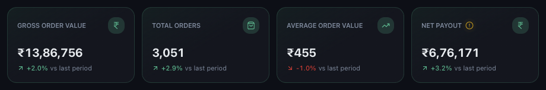
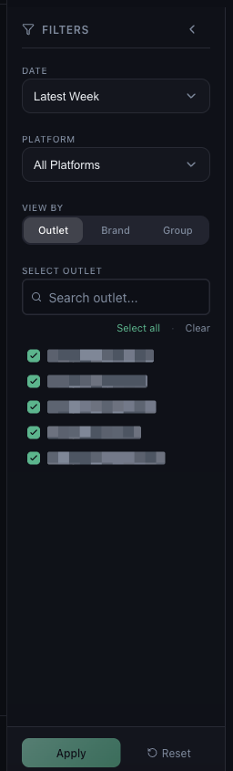

Data Issues · Read time: 5 minutes · Article only · Last updated 25 August 2026
A figure looks too high, too low, or does not match what the platform app says. Nine times out of ten the number is right and the two of you are counting different things.
First, read the card properly
Each headline card shows a value and a change against the comparison period — not against the same period last year.

Every card compares against the LAST PERIOD chip in the header, not against last year
Gross Order Value
What customers were billed, before platform deductions.
Total Orders
Number of orders in the period.
Average Order Value
Gross order value divided by orders.
Net Payout
What actually reaches you after commission, fees and adjustments.
Gross Order Value and Net Payout are meant to differ, often by a wide margin. If you are comparing Mynt against your bank statement, compare it against Net Payout.
Then check the filters
The left panel decides what is counted. A number that looks wrong is very often a number for a narrower slice than you meant.

DATE, PLATFORM, VIEW BY and the outlet list all narrow what the cards count
DATE — is the period the one you meant? Check the dates on the chip, not just the label.
PLATFORM — All Platforms, or is one selected?
VIEW BY — Outlet, Brand or Group changes how rows are aggregated.
SELECT OUTLET — use Select all to be certain nothing is excluded.
Press Reset to clear everything and read the number again.
Why Mynt and the platform dashboard disagree
Different date basis
Platforms report by order date; settlement emails report by payout cycle. Week boundaries rarely line up.
Refunds and cancellations
These are netted out in the settlement, so Mynt shows the settled figure.
Taxes and TDS
Deducted before payout, so they lower Net Payout but not Gross Order Value.
One outlet unmapped
Its orders are skipped entirely, which shows as a low total.
Partially processed week
A payout email that has not arrived yet leaves the period incomplete.
If the number is still wrong
Confirm every outlet is mapped — see how mapping affects your data — and then raise a ticket with the metric, the exact period, the figure Mynt shows and the figure you expected.
Common questions
Why is Net Payout so much lower than Gross Order Value?
Commission, payment gateway charges, packaging fees, promotional funding and taxes all come out in between. That gap is normal.
The number changed since yesterday.
It can. A later settlement email can add orders, refunds or adjustments to a period you already looked at.
Average Order Value looks wrong.
It is gross order value divided by orders for the current filters. Narrow the filters and both halves change.